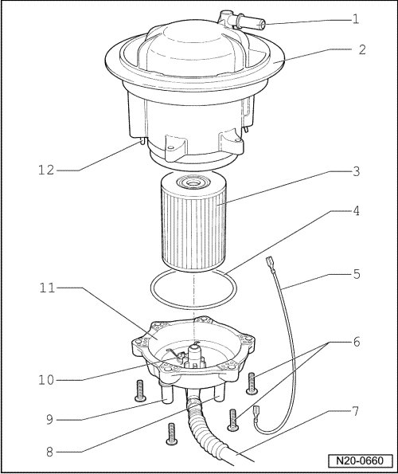

Fuel Filter, Assembly Overview
Fuel Filter, Assembly Overview

1 Connection
• For breather line
2 Flange
• Left side
• With fuel filter housing
• Note installation position on fuel tank --> [ Installed Position of Sender Flange on Fuel
Tank ] Fuel Tank with Attachments, Assembly Overview
3 Filter element
4 Seal
• Replace
5 Ground wire
• Ensure seated tightly
6 10 Nm
7 Supply line
• To fuel pressure regulator
8 Connection
• Filter supply from left fuel pump unit
9 Connection
• Filter supply from left fuel pump unit
10 Ground connection
11 Sealing cap
• For filter housing
12 Locating pin